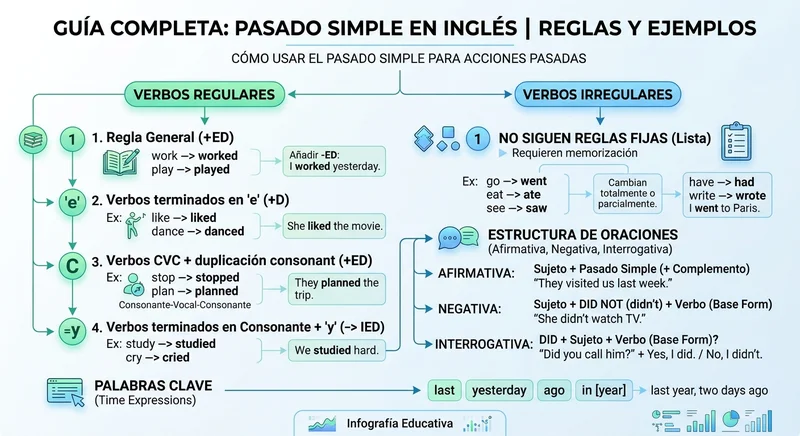

Pasado Simple en Inglés: Reglas y Ejemplos Definitivos
Imagina que estás en una entrevista de trabajo internacional o conversando con amigos nativos y necesitas contar qué hiciste el fin de semana pasado, o cómo resolviste un problema complejo en tu empleo anterior. Para lograr esto con fluidez y precisión profesional, el pasado simple en inglés (simple past tense) es tu herramienta gramatical más indispensable.
En el idioma inglés, este tiempo verbal se utiliza fundamentalmente para describir acciones, eventos o estados que ocurrieron y se completaron en un momento específico del pasado. A diferencia del español, donde las conjugaciones verbales cambian drásticamente para cada persona gramatical, el inglés ofrece una gran ventaja de simplicidad, aunque requiere prestar atención a la distinción fundamental entre verbos regulares e irregulares.
Estructura de las Oraciones Afirmativas
La regla general para construir una oración afirmativa en pasado simple es directa y se aplica a todos los pronombres personales (I, you, he, she, it, we, they) sin excepción:
Fórmula Estándar:
Sujeto + Verbo en Pasado + Complemento
Para ilustrar esto, veamos algunos ejemplos prácticos de la vida cotidiana y profesional que puedes escuchar constantemente:
Ejemplo 1: I worked on the final report yesterday.
Traducción: Trabajé en el informe final ayer.
Ejemplo 2: She traveled to London last month.
Traducción: Ella viajó a Londres el mes pasado.
Verbos Regulares vs. Verbos Irregulares
El verdadero desafío al dominar el pasado simple radica en conocer la transformación de los verbos. Estos se dividen en dos grandes categorías:
1. Verbos Regulares
Son aquellos que forman su pasado simplemente añadiendo la terminación -ed (o solo -d si el verbo ya termina en e) a su forma base. Además, existen reglas ortográficas secundarias para verbos que terminan en consonante más y, donde la y cambia a ied.
Ejemplo Regular: They studied English for two hours.
Traducción: Ellos estudiaron inglés durante dos horas.
2. Verbos Irregulares
No siguen una regla fija; su forma en pasado cambia por completo o permanece igual. Deben memorizarse mediante la práctica constante y la lectura frecuente.
Ejemplo Irregular: We went to the conference last week.
Traducción: Fuimos a la conferencia la semana pasada.
Oraciones Negativas y Preguntas (Uso del auxiliar Did)
Para negar y formular preguntas en pasado simple, utilizamos el verbo auxiliar did (que es la forma pasada del verbo do). Una regla de oro fundamental en el inglés es que cuando usas el auxiliar did en negaciones o preguntas, el verbo principal debe regresar obligatoriamente a su forma base (infinitivo sin to) .
Ejemplo Negativo: He didn't sign the contract this morning.
Traducción: Él no firmó el contrato esta mañana.
Ejemplo Interrogativo: Did you finish the presentation on time?
Traducción: ¿Terminaste la presentación a tiempo?
Errores Comunes que Debes Evitar
Uno de los errores más frecuentes entre los hispanohablantes al aprender inglés es duplicar el tiempo pasado en oraciones negativas o interrogativas. Por ejemplo, decir incorrectamente: He didn't went . Al utilizar didnt , el verbo principal debe estar en presente (go).
Otro error común es olvidar que el verbo to be (was/were) no requiere el auxiliar did para formar preguntas o negaciones. Decir Did you be at home? es incorrecto; la forma correcta y natural es Were you at home? .

Tabla Resumen de Estructuras
Utiliza esta tabla como referencia rápida para recordar la estructura exacta del pasado simple en sus tres formas principales:
| Tipo de Oración | Estructura Gramatical | Ejemplo Práctico |
|---|---|---|
| Afirmativa | Sujeto + Verbo en Pasado + Complemento | She bought a new car. |
| Negativa | Sujeto + didn't + Verbo en Infinitivo + Complemento | She didn't buy a new car. |
| Interrogativa | Did + Sujeto + Verbo en Infinitivo + Complemento? | Did she buy a new car? |
Puntos Clave para Recordar (Key Takeaways)
- ✓ El pasado simple se usa para acciones concluidas en un tiempo específico del pasado.
- ✓ Los verbos regulares añaden -ed, mientras que los irregulares cambian su forma y deben memorizarse.
- ✓ Al usar el auxiliar did en oraciones negativas o preguntas, el verbo principal regresa estrictamente a su forma base (infinitivo).
- ✓ El verbo to be (was/were) funciona de manera independiente y no necesita el auxiliar did.